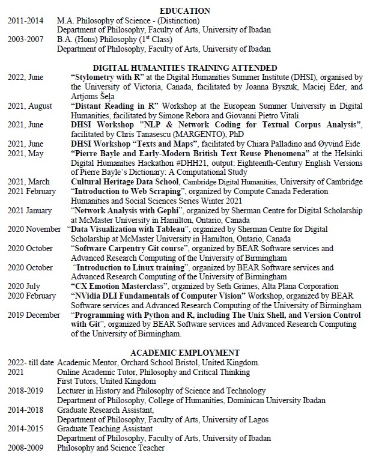

About Me
A Developer and DH Researcher
My academic background in the humanities as well as computing has equipped me with sound analytical and problem-solving skills for both qualitative and quantitative research. Over the past 10 years, I have gained knowledge and experience in the deployment of programming and scripting languages (such as HTML, CSS, TEI-XML, and PYTHON) as well as research software (like Nvivo, Voyants, Doccano, QGiis, Open Refine, SPSS, etc). Also, I am efficient in the use of Mobile Devices, Networking Hardware and Software, Virtualization and VPN, Cloud Computing, Operating Systems (Windows/Linux/iOS/Android), Security Software and General Troubleshooting.
Read More..Resume
My Works

Paint Me Black
A Digital Humanities project that highlights the rationality and aesthetics of salients aspects of African Arts
Learn More
EvaReady2Dazzle
An online store specifically for selling and buying cloths, shoes, and jewerries.
Learn More
Philosophers Association of Nigeria
A website designed for the national association of philosophers in Nigeria in order to provide information, simplify membership registration, and enhance conference publication process.
Learn More
FSV Multimedia ltd
A web portal designed for a computer training institute in order to provide learning resources for their students and provide information for prospective applicants.
Learn More
African Researchers Network_UK
A Website designed to serve as an academic hub for African and non-african researchers across various stages of their career. It features online streaming channel, a chatroom, a digital library, and a journal platform.
Learn More
Afro Think It Right
A digital gallery of African Great Thinkers - displaying their pictures, publications, countries and achievements.
Learn More
African Digital Humanities
A collection of links and references to articles and books on Digital humanities scholarship, practices, projects and institutions in Africa. It also showcase multimedia resources on thematic issues that address the epistemic and ontological reality of Africans.
Learn More
African Philosophers Online
An Archive of names, publications and ideas promoted by numerous unknown and rarely mentioned Philosophers in Africa.
Learn More